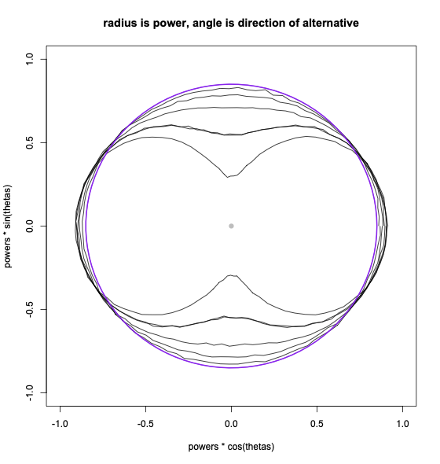

Attention Conservation Notice: I stole the title from Cosma Shalizi, who is a better writer than me. He meant the central limit theorem; I mean the Gauss-Markov theorem. Also, this is about multiparameter tests, which are intrinsically not very interesting
In survey statistics, there are two classes of tests that are widely used for contingency tables and rather less widely used for regression models.
If you have a vector \(\hat\beta\sim N(\beta,\Xi)\) of parameter estimates and you want to test \(\beta=0\) (yes, or \(\beta=\beta_0\)) there are problems due to the survey design. The variance of \(\hat\beta\) is not the inverse Fisher information; it’s a sandwich \(V=A^{-1}BA^{-1}\) where \(A\) is a weighted estimate of the population Fisher information on the outside and \(B\) is a design-based variance estimate for the score function.
Under standard iid sampling, if you want to test \(\beta=0\) for more than one parameter you would obviously weight the components by their estimated precision matrix. Under complex sampling you have options:
The motivation for the first one is obvious: it’s the precision matrix. Also, the test statistic has a nice simple \(\chi^2\) distribution. The motivation for the second one is partly that the weighting of different directions doesn’t depend on the design, partly that it helps you interpret tests done by people who don’t understand complex sampling, and partly that it has better control of level
The second family of tests are called the Rao-Scott tests, after JNK Rao and Alastair Scott. Rao and Scott derived them in the 1980s, initially to answer the question “if some misguided person does a Pearson \(X^2\) test on an estimated population table then what, if anything, do the results mean?”. The tests were then used more widely in survey statistics and were shown to have better Type I error than the competition.2 The first family don’t seem to have a name; I’ll call them intrinsically-weighted tests.
Anyway. A few years ago, Keiran Shao did a Masters project with me, looking at the performance of the likelihood, Wald, and score versions of the Rao-Scott test and the Wald and score versions of the intrinsically weighted tests for regression models.3 As I expected, he found that the Rao-Scott-type tests had better control of level. As I completely didn’t expect, he found they had lower power.
Usually you think of statements like “the Rao-Scott tests are less powerful than the intrinsically-weighted tests” as Not Even Wrong; someone just didn’t do a broad enough simulation study. That is, usually one test is more powerful than another against some alternatives and less powerful against other alternatives, but you can’t make any general statements. We know, for example, that there aren’t uniformly most powerful tests in any interesting setting.
This time is different. It’s still true that neither set of tests is uniformly more powerful, but I think it’s not misleading to say the Rao-Scott tests are typically less powerful. Which is a pity; I like them.
As evidence, here’s a fairly comprehensive picture of the two-parameter case. We want to compare the test based on \(\hat\beta^T V^{-1}\hat\beta\) with the test based on some other \(\hat\beta^T W\hat\beta\).
It is no loss of generality to assume the sample covariance matrix \(V\) is a multiple of the identity, since we can linearly reparametrise \(\beta\) to obtain this. It is then no loss of generality to assume the weight matrix \(W\) is diagonal, by applying a rotation if necessary. Since the weight matrix is used only as weigts, its overall scale doesn’t matter; only the ratio of the two diagonal elements affects inference. We have thus reduced the choice of weight matrices to a single number, the ratio \(\phi\) of the two eigenvalues of the population variance matrix.
We can parametrise the alternative hypothesis \(\beta=\beta_A\) in polar coordinates. We choose the radius so that the power of the intrinsically-weighted test is a specified value and estimate the power of the Rao–Scott-type test by simulation. Suppose the chosen power is 75%. We plot a circle of radius 0.75 representing the power of the intrinsically-weighted test and a curve \((r,\theta)\) where \(r\) is the power of the Rao–Scott-type test in direction \(\theta\) for the same set of alternatives. When the curve is outside the circle, the Rao-Scott-type test is more powerful in that direction than the intrinsically-weighted test.
The graph shows curves for 85% power, 5% level, and \(\phi\) ranging from 1.1 up to 10.

When \(\phi\approx 1\) the black curve is close to the purple circle; when \(\phi=10\) it’s a long way from the circle. For alternatives in the same direction as the larger weight from \(W\) (horizontally) the power of the Rao-Scott test is increased a little. For alternatives in the orthogonal direction (vertically) the power is reduced a lot. Overall, the Rao-Scott test has a small advantage over a small range of directions and a larger disadvantage over a larger range of directions.
So what’s going on? There are at least two contributions to this. The first is related to the Gauss-Markov theorem: among alternatives with the same average non-centrality parameters over all directions, the true precision matrix gives the smallest null variance and so should have greater power. The second is that the null distribution of the Rao-Scott tests has heavier tails than the \(\chi^2_2\) distribution of the intrinsically-weighted tests, so the right tail probabilities (\(p\)-values) will be larger.
The second argument suggests, which turns out to be true, that the situation will be worse at very small Type I error levels. It should be possible to do this sort of comprehensive analysis for three-parameter tests, but beyond that I think we’re stuck with simulations of specific cases.
as you would naturally do and as the Gauss-Markov theorem suggests↩︎
\(B\) can be very poorly estimated in surveys with a few large clusters. The Rao-Scott tests are sensitive to error in the largest eigenvalues of \(\hat B\) and the other tests are sensitive to error in the reciprocals of the smallest eigenvalues of \(\hat B\), which is much worse.↩︎
At that time I didn’t know how to define likelihood-ratio tests for the intrinsically-weighted series, but this sort of thing should work↩︎